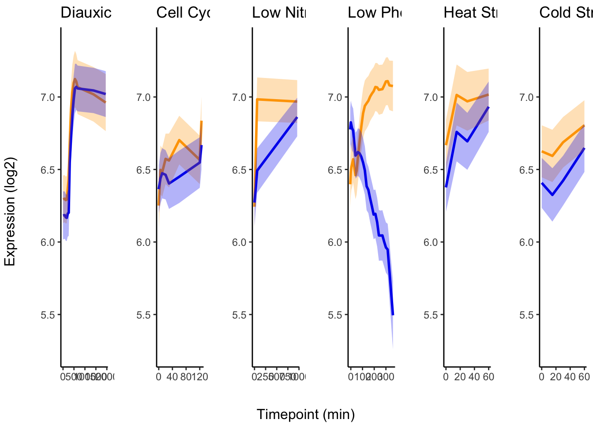
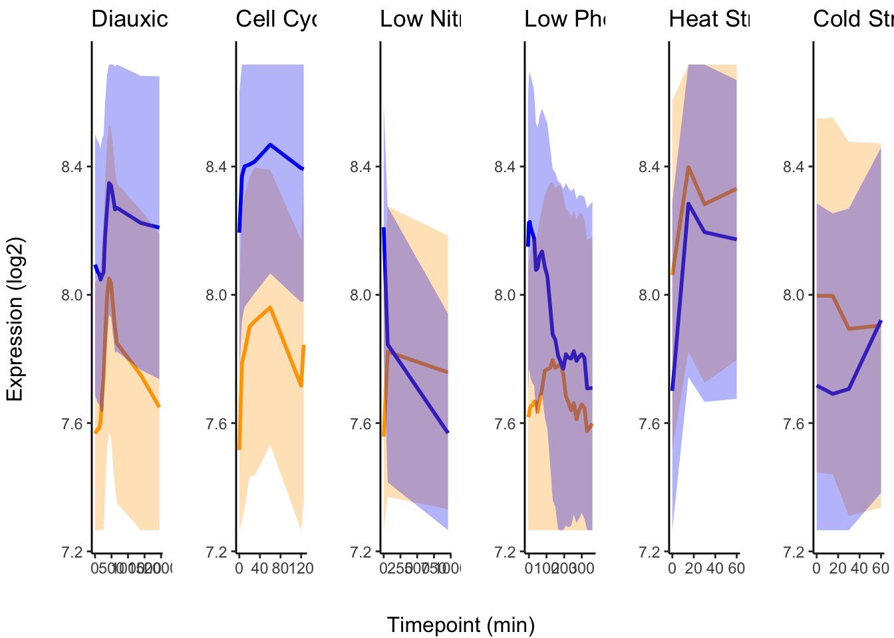
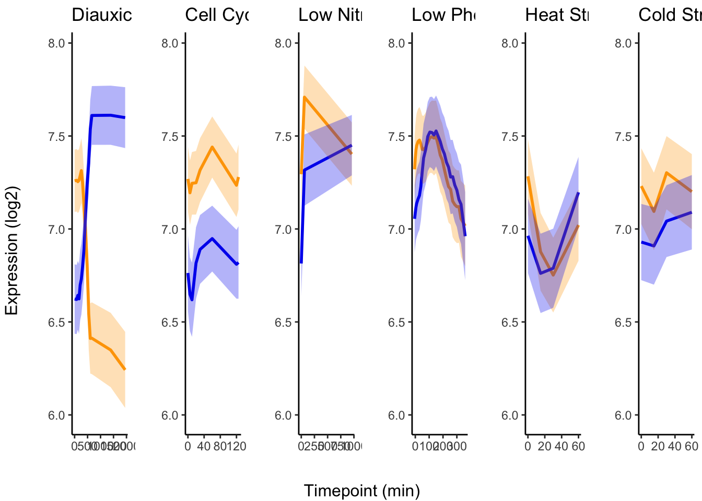
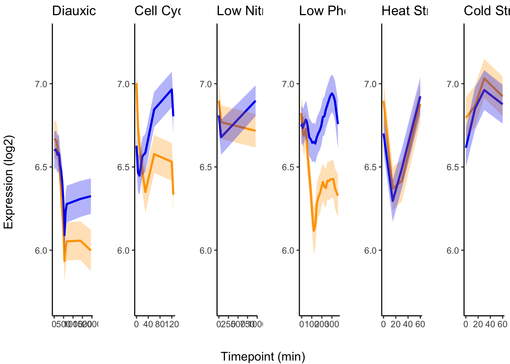
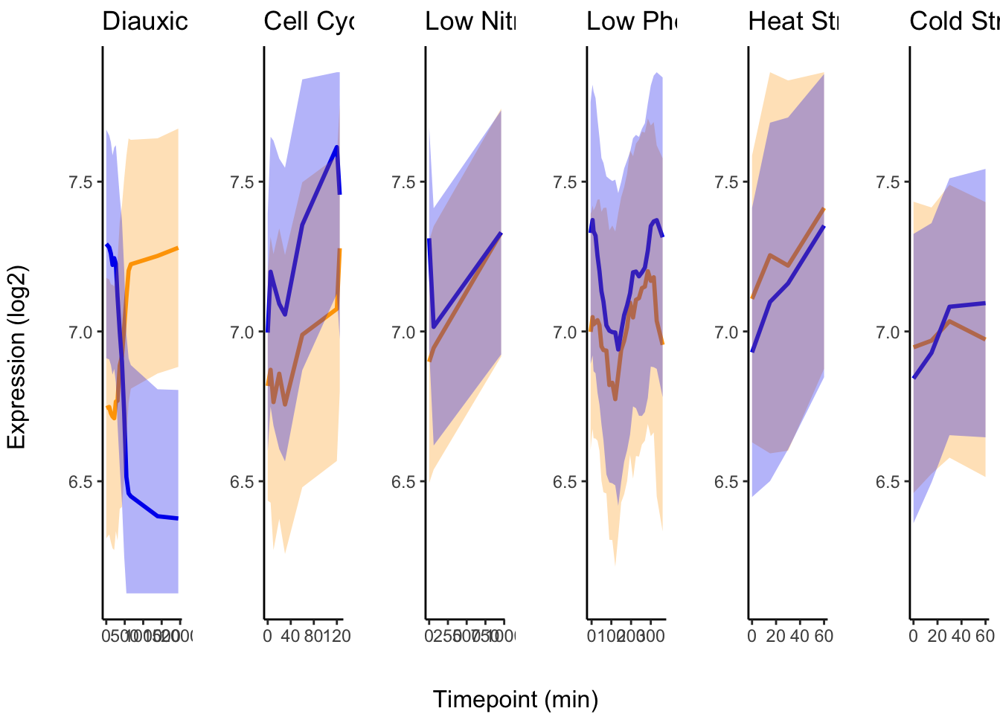
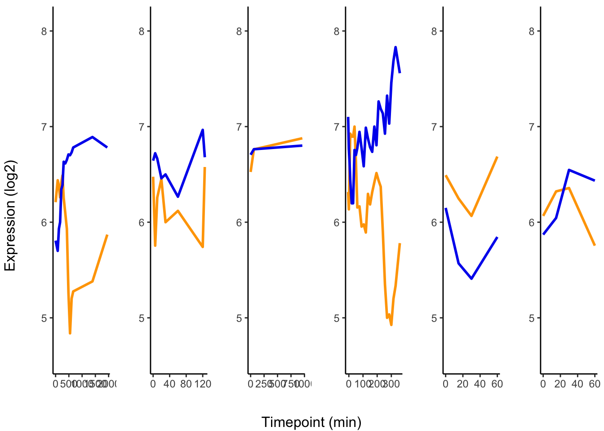
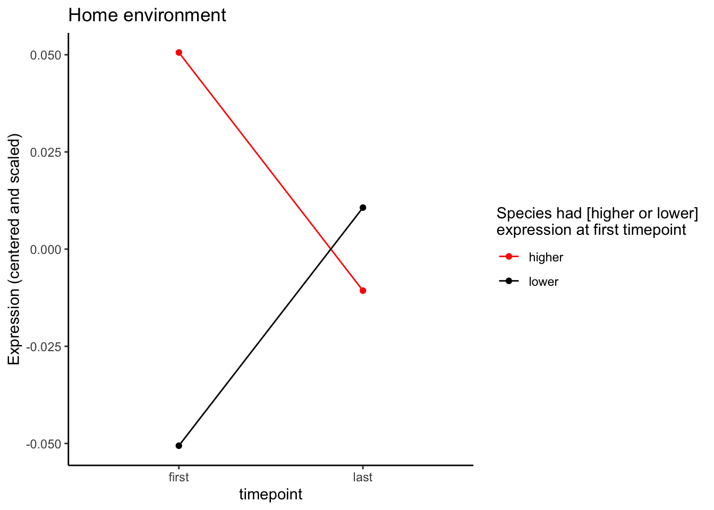
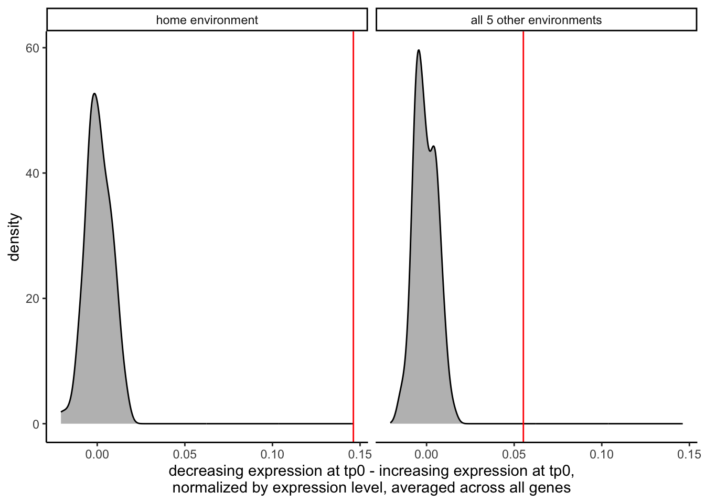

Level and plasticity divergence patterns across all 6 environments
sapply(c("stringr", "RColorBrewer", "circlize", "ggridges",
"ComplexHeatmap"), require, character.only=TRUE)## Loading required package: stringr## Loading required package: RColorBrewer## Loading required package: circlize## ========================================
## circlize version 0.4.16
## CRAN page: https://cran.r-project.org/package=circlize
## Github page: https://github.com/jokergoo/circlize
## Documentation: https://jokergoo.github.io/circlize_book/book/
##
## If you use it in published research, please cite:
## Gu, Z. circlize implements and enhances circular visualization
## in R. Bioinformatics 2014.
##
## This message can be suppressed by:
## suppressPackageStartupMessages(library(circlize))
## ========================================## Loading required package: ggridges## Loading required package: ComplexHeatmap## Loading required package: grid## ========================================
## ComplexHeatmap version 2.24.0
## Bioconductor page: http://bioconductor.org/packages/ComplexHeatmap/
## Github page: https://github.com/jokergoo/ComplexHeatmap
## Documentation: http://jokergoo.github.io/ComplexHeatmap-reference
##
## If you use it in published research, please cite either one:
## - Gu, Z. Complex Heatmap Visualization. iMeta 2022.
## - Gu, Z. Complex heatmaps reveal patterns and correlations in multidimensional
## genomic data. Bioinformatics 2016.
##
##
## The new InteractiveComplexHeatmap package can directly export static
## complex heatmaps into an interactive Shiny app with zero effort. Have a try!
##
## This message can be suppressed by:
## suppressPackageStartupMessages(library(ComplexHeatmap))
## ========================================## stringr RColorBrewer circlize
## TRUE TRUE TRUE
## ggridges ComplexHeatmap
## TRUE TRUEsource("functions_for_figure_scripts.R")
load("data_files/FinalDataframe3Disp.RData")
load("data_files/Cleaned_Counts.RData")
load("data_files/Cleaned_Counts_Allele.RData")
load("data_files/CorrelationClustering3Disp.RData")
load(file = "data_files/GO_Slim.RData")Plotting a number-line of sampling timepoints proportional to time ellapsed (min) for the Experimental Design figure
# following bgoldst suggestion on stackoverflow: https://stackoverflow.com/questions/32051890/r-plotting-points-with-labels-on-a-single-horizontal-numberline
plotSamplingTimepoints <- function(.timepoints, .labels = FALSE,
.label_height = 20) {
max_tp <- max(.timepoints)
min_tp <- min(.timepoints)
xlim <- c(min_tp, max_tp)
ylim <- c(min_tp, max_tp)
px <- .timepoints
py <- rep(0, times = length(.timepoints))
lx.buf <- 5
lx <- seq(xlim[1] + lx.buf,
xlim[2] - lx.buf,
len = length(px))
ly <- .label_height
xlim <- c(xlim[1] - 10,
xlim[2] + 30)
## create basic plot outline
par(xaxs = 'i', yaxs = 'i', mar = c(5, 1, 1, 1))# mar = c(b, l, t, r)
plot(NA, xlim = xlim, ylim = ylim, axes = FALSE, ann = FALSE)
#axis(1)
## plot elements
points(px, py, pch = 16, xpd = NA)
if (.labels) {
segments(px, py, lx, ly)
text(lx, ly, px, pos = 3)
}
}
# tests for plotSamplingTimepoints
test_tps <- info[info$experiment == "LowPi",]$time_point_num |> unique()
plotSamplingTimepoints(.timepoints = test_tps)
plotSamplingTimepoints(.timepoints = test_tps, .labels = TRUE)plotSamplingTimepoints(.timepoints = test_tps, .label_height = 100, .labels = TRUE)label_lookup <- tibble(experiment = ExperimentNames,
label_height = c(150, 10, 40, 20, 5, 5))# generating plots
for (e in ExperimentNames) {
e_tps <- info[info$experiment == e,]$time_point_num |> unique()
labh <- label_lookup[label_lookup$experiment == e,]$label_height |> as.numeric()
pdf(file = paste0("paper_figures/ExperimentOverview/timepoints_",
e, ".pdf"), width = 5, height = 2)
print(plotSamplingTimepoints(.timepoints = e_tps, .label_height = labh))
dev.off()
}## NULL## NULL## NULL## NULL## NULL## NULLVisualizing cluster average expression for all environments:
display.brewer.all() Color palettes we’ll use for the 6 environments:
Color palettes we’ll use for the 6 environments:
palettedf <- tibble(experiment = ExperimentNames,
palette = c("Greys", "YlGn", "Greens", "Purples", "YlOrBr", "BuPu"),
long_name = LongExperimentNames)Wrapping cluster plots into a function so we don’t have to repeatedly make the same plot
plotClusterPatternByExperiment <- function(.df, .experiment, .title = NULL) {
plotdf <- summarise(group_by(.df, time_point_num, label),
mean_expr = mean(expr, na.rm = TRUE))
plotdf$label <- as.factor(plotdf$label)
color_plt <- palettedf |> filter(experiment == .experiment) |> dplyr::select(palette) |> pull()
if (is.null(.title)) {
.title <- palettedf |> filter(experiment == .experiment) |> dplyr::select(long_name) |> pull()
}
ggplot(plotdf, aes(x = time_point_num, y = log2(mean_expr + 1))) +
geom_line(aes(group = label, color = label), linewidth = 4) +
geom_point(color = "black", alpha = 0.4) +
xlab("timepoint (min)") +
ylab("expression (log2)") +
scale_color_brewer(palette = color_plt, name = "cluster",
direction = -1) +
theme_classic() +
theme(legend.position = "right") +
ggtitle(.title)
}p_blank <- ggplot() + theme_void()
pdf("paper_figures/ExperimentOverview/cluster_ref.pdf",
width = 8, height = 8)
ggarrange(plotClusterPatternByExperiment(clusterdf_list$HAP4_2$df, .experiment = "HAP4"),
p_blank,
plotClusterPatternByExperiment(clusterdf_list$CC_2$df, .experiment = "CC"),
plotClusterPatternByExperiment(clusterdf_list$LowN_2$df, .experiment = "LowN"),
p_blank,
plotClusterPatternByExperiment(clusterdf_list$LowPi_2$df, .experiment = "LowPi"),
plotClusterPatternByExperiment(clusterdf_list$Heat_2$df, .experiment = "Heat"),
p_blank,
plotClusterPatternByExperiment(clusterdf_list$Cold_2$df, .experiment = "Cold"),
nrow = 3, ncol = 3, common.legend = FALSE, widths = c(2, 0.5, 2))## `summarise()` has grouped output by 'time_point_num'.
## You can override using the `.groups` argument.
## `summarise()` has grouped output by 'time_point_num'.
## You can override using the `.groups` argument.
## `summarise()` has grouped output by 'time_point_num'.
## You can override using the `.groups` argument.
## `summarise()` has grouped output by 'time_point_num'.
## You can override using the `.groups` argument.
## `summarise()` has grouped output by 'time_point_num'.
## You can override using the `.groups` argument.
## `summarise()` has grouped output by 'time_point_num'.
## You can override using the `.groups` argument.dev.off()## quartz_off_screen
## 2Similar proportions of genes are diverging in each environment
Stacked bars of 4 divergence categories in each environment:
plotdf <- finaldf |> dplyr::select(gene_name, experiment, group4) |>
pivot_wider(id_cols = c("gene_name"), names_from = "experiment",
values_from = "group4") |>
pivot_longer(cols = ExperimentNames, names_to = "experiment",
values_to = "group5") # to add NA values for low expression## Warning: Using an external vector in selections was deprecated in
## tidyselect 1.1.0.
## ℹ Please use `all_of()` or `any_of()` instead.
## # Was:
## data %>% select(ExperimentNames)
##
## # Now:
## data %>% select(all_of(ExperimentNames))
##
## See
## <https://tidyselect.r-lib.org/reference/faq-external-vector.html>.
## This warning is displayed once every 8 hours.
## Call `lifecycle::last_lifecycle_warnings()` to see where
## this warning was generated.plotdf$group5 <- if_else(is.na(plotdf$group5), true = "lowly expressed",
false = plotdf$group5) |>
factor(levels = c("conserved level and plasticity",
"conserved level, diverged plasticity",
"diverged level, conserved plasticity",
"diverged level and plasticity",
"lowly expressed"))
plotdf$experiment <- factor(plotdf$experiment, levels = ExperimentNames)
p <- ggplot(plotdf, aes(x = experiment)) +
geom_bar_pattern(aes(fill = group5, pattern = group5), pattern_fill = "black") +
scale_fill_discrete(type = colordf[colordf$scheme == "group4",]$type,
limits = colordf[colordf$scheme == "group4",]$limits) +
scale_pattern_discrete(choices = colordf[colordf$scheme == "group4",]$pattern,
limits = colordf[colordf$scheme == "group4",]$limits) +
scale_x_discrete(limits = ExperimentNames, labels = LongExperimentNames) +
theme_classic() +
theme(legend.title = element_blank(),
axis.text.x = element_text(angle = 45, hjust = 1, vjust = 1),
legend.position = "bottom") +
ylab("number of genes") +
xlab("") +
guides(fill = guide_legend(nrow = 3))
pdf("paper_figures/EnvironmentalPatterns/stacked_bars.pdf",
width = 5, height = 6)
p
dev.off()## quartz_off_screen
## 2Ridgeline plot of log2 fold changes in each environment:
plotdf <- filter(finaldf, level == "diverged")
filter(finaldf, plasticity == "conserved" & level == "conserved") |> group_by(experiment) |>
summarise(n = n())## # A tibble: 6 × 2
## experiment n
## <chr> <int>
## 1 CC 1329
## 2 Cold 1416
## 3 HAP4 2018
## 4 Heat 1586
## 5 LowN 1920
## 6 LowPi 1658# accompanying percentages of upScer and upSpar genes
pctdf <- plotdf |> group_by(experiment) |>
summarise(pct_upcer = round(sum(effect_size_species > 0)/length(effect_size_species), digits = 2)*100,
pct_uppar = round(sum(effect_size_species < 0)/length(effect_size_species), digits = 2)*100,
n = length(effect_size_species)) |>
pivot_longer(cols = c("pct_upcer", "pct_uppar"),
names_to = "direction", values_to = "pct") |>
mutate(x_pos = if_else(direction == "pct_upcer",
true = 5, false = -5))
pctdf$y_pos <- sapply(pctdf$experiment, \(e) which(ExperimentNames == e) + 0.5)
p <- ggplot(data = plotdf, aes(x = effect_size_species, y = experiment, fill = experiment)) +
geom_density_ridges(data = plotdf) +
geom_text(data = pctdf, aes(x = x_pos, y = y_pos, label = paste0(pct, "%"))) +
theme_classic() +
theme(legend.position = "none") +
ylab("") +
xlab("log2 fold change") +
scale_fill_discrete(limits = colordf[colordf$scheme == "experiment",]$limits,
type = colordf[colordf$scheme == "experiment",]$type) +
scale_y_discrete(limits = ExperimentNames, labels = LongExperimentNames)
p## Picking joint bandwidth of 0.265
pdf("paper_figures/EnvironmentalPatterns/ridgeline.pdf",
width = 4, height = 3)
p## Picking joint bandwidth of 0.265dev.off()## quartz_off_screen
## 2Heatmap of species-specific and reversals of expression plasticity
plotdf <- finaldf |> # filter(plasticity == "diverged") |>
group_by(experiment, cer, par) |>
summarise(n = n())## `summarise()` has grouped output by 'experiment', 'cer'.
## You can override using the `.groups` argument.plotdf$long_experiment <- map(plotdf$experiment, \(e) {
LongExperimentNames[which(ExperimentNames == e)]
}) |> factor(levels = LongExperimentNames)
plotdf$cer <- factor(plotdf$cer, levels = c("0", "1", "2"))
plotdf$par <- factor(plotdf$par, levels = c("2", "1", "0"))
plotdf$type <- map2(plotdf$cer, plotdf$par, \(x, y) {
if (x == y) {
if (x == 0 & y == 0) {
return("conserved static")
}
return("conserved plastic")
}
if (x == 0) {
return("Spar-unique")
}
if (y == 0) {
return("Scer-unique")
}
else {
return("reversal")
}
}) |> unlist()
p <- ggplot(plotdf, aes(x = cer, y = par, fill = type)) +
geom_tile() +
geom_text(aes(label = n,
color = grepl(pattern = "conserved", x = type))) +
scale_color_discrete(limits = c(TRUE, FALSE),
type = c("grey40", "white")) +
scale_fill_discrete(limits = colordf[colordf$scheme == "plasticity",]$limits,
type = colordf[colordf$scheme == "plasticity",]$type) +
facet_wrap(~long_experiment) +
theme_classic() +
xlab("Scer plasticity cluster") +
ylab("Spar plasticity cluster") +
guides(fill=guide_legend(title="number of genes")) +
theme(legend.position = "none")
pdf("paper_figures/EnvironmentalPatterns/plasticity_counts_heatmap.pdf",
width = 4, height = 3)
p
dev.off()## quartz_off_screen
## 2Divergence category in one environment is a poor predictor of other environments
plotdf <- finaldf |> dplyr::select(gene_name, experiment, group4) |>
# pivoting wider and longer again to add the genes that have been removed for low expression
pivot_wider(id_cols = "gene_name", values_from = "group4", names_from = "experiment") |>
pivot_longer(cols = all_of(ExperimentNames),
names_to = "experiment", values_to = "group4")
plotdf$group4[is.na(plotdf$group4)] <- "lowly expressed"
plot_mat <- plotdf |>
pivot_wider(id_cols = "gene_name",
names_from = "experiment",
values_from = "group4")
colnames_plotmat <- plot_mat$gene_name
rownames_plotmat <- colnames(plot_mat)
plot_mat <- data.frame(plot_mat) |> t()
colnames(plot_mat) <- colnames_plotmat
rownames(plot_mat) <- rownames_plotmat
plot_mat <- plot_mat[rownames(plot_mat) != "gene_name",]
plot_mat <- plot_mat |> as.matrix()
clrs <- structure(colordf[colordf$scheme == "group4",]$type,
names = colordf[colordf$scheme == "group4",]$limits)
majority_NA <- apply(plot_mat, 2, \(x) {return(sum(is.na(x)) > 2)})
sum(majority_NA)## [1] 0plot_mat <- plot_mat[,!majority_NA]
# sorting cols by HAP4's order
col_order_vec <- order(factor(plot_mat["HAP4",], levels = colordf[colordf$scheme == "group4",]$limits))
# # tests for OrderGenesByGroup (moved to function script b/c we use it in multiple scripts now)
# # subset of plotmat
# orderGenesByGroup(.mat = plot_mat[, 1:100]) |> dim()
# ordering full plotmat
ordered_plot_mat <- orderGenesByGroup(.mat = plot_mat[ExperimentNames,])
rownames(ordered_plot_mat) <- LongExperimentNames
plotdf <- map(LongExperimentNames, \(e) {
idx <- which(LongExperimentNames == e)
return(tibble(gene_name = colnames(ordered_plot_mat),
environment = e,
group4 = ordered_plot_mat[idx,],
x = c(1:ncol(ordered_plot_mat)),
y = c(length(LongExperimentNames):1)[idx])) # descending from top
}) |> purrr::reduce(.f = bind_rows)
p <- ggplot(plotdf, aes(x = x, y = y, fill = group4)) +
geom_tile_pattern(aes(fill = group4, pattern = group4), pattern_fill = "black",
pattern_density = 0.05, pattern_size = 0.05) +
scale_fill_discrete(limits = colordf[colordf$scheme == "group4",]$limits,
type = colordf[colordf$scheme == "group4",]$type) +
scale_pattern_discrete(limits = colordf[colordf$scheme == "group4",]$limits,
choices = colordf[colordf$scheme == "group4",]$pattern) +
theme_void()
p# plotting
pdf("paper_figures/EnvironmentalPatterns/discrete_heatmapLines.pdf",
width = 14, height = 2)
p
dev.off()## quartz_off_screen
## 2Level divergence is consistent across environments and mostly between strains
Genes with higher Log2 fold change in Scer:
plot_mat <- matrix(nrow = length(ExperimentNames),
ncol = length(ExperimentNames))
# up in Scer
for (e_row in ExperimentNames) {
for (e_col in ExperimentNames) {
e_gene_idxs <- finaldf |> filter(experiment == e_row &
level == "diverged" &
sign(effect_size_species) == 1) |>
dplyr::select(gene_name) |> pull()
avg_lfc <- finaldf |> filter(experiment == e_col &
gene_name %in% e_gene_idxs) |>
dplyr::select(effect_size_species) |> pull() |> mean()
plot_mat[which(ExperimentNames == e_row),
which(ExperimentNames == e_col)] <- avg_lfc
}
}
colnames(plot_mat) <- LongExperimentNames
rownames(plot_mat) <- LongExperimentNames
col_fun = colorRamp2(c(-1, 0, 1), c("blue2", "white", "orange1"))
p <- Heatmap(plot_mat, col = col_fun,
row_order = LongExperimentNames, column_order = LongExperimentNames,
row_names_side = "left", heatmap_legend_param = list(title = ""),
cell_fun = function(j, i, x, y, width, height, fill) {
grid.text(sprintf("%.2f", plot_mat[i, j]), x, y, gp = gpar(fontsize = 10))
})
ppdf("paper_figures/EnvironmentalPatterns/level_divergence_heatmap_up_scer.pdf",
width = 5, height = 3)
p
dev.off()## quartz_off_screen
## 2Genes with higher Log2 fold change in Spar:
plot_mat <- matrix(nrow = length(ExperimentNames),
ncol = length(ExperimentNames))
for (e_row in ExperimentNames) {
for (e_col in ExperimentNames) {
e_gene_idxs <- finaldf |> filter(experiment == e_row &
level == "diverged" &
sign(effect_size_species) == -1) |>
dplyr::select(gene_name) |> pull()
avg_lfc <- finaldf |> filter(experiment == e_col &
gene_name %in% e_gene_idxs) |>
dplyr::select(effect_size_species) |> pull() |> mean()
plot_mat[which(ExperimentNames == e_row),
which(ExperimentNames == e_col)] <- avg_lfc
}
}
colnames(plot_mat) <- LongExperimentNames
rownames(plot_mat) <- LongExperimentNames
col_fun = colorRamp2(c(-1, 0, 1), c("blue2", "white", "orange1"))
p <- Heatmap(plot_mat, col = col_fun,
row_order = LongExperimentNames, column_order = LongExperimentNames,
row_names_side = "left", heatmap_legend_param = list(title = ""),
cell_fun = function(j, i, x, y, width, height, fill) {
grid.text(sprintf("%.2f", plot_mat[i, j]), x, y, gp = gpar(fontsize = 10))
})
ppdf("paper_figures/EnvironmentalPatterns/level_divergence_heatmap_up_spar.pdf",
width = 5, height = 3)
p
dev.off()## quartz_off_screen
## 2Plasticity divergence is unique to each environment
Y axis: environment those 2-1 or 1-2 divergers were ID’d in X axis: how their plasticity divergence looks in other environments How do we measure plasticity divergence? Correlation of avg expr between species
# Given gene idxs and experiment,
# returns between-species correlation
# of average expression across timepoints
getplasticityCorr <- function(.gene_idxs, .experiment_name) {
condition_vec <- info |> filter(experiment == .experiment_name) |>
dplyr::select(condition) |> pull()
cer_vec <- collapsed$cer[.gene_idxs, condition_vec] |>
colMeans(na.rm = TRUE)
par_vec <- collapsed$par[.gene_idxs, condition_vec] |>
colMeans(na.rm = TRUE)
return(cor(cer_vec, par_vec))
}
# tests for getplasticity Corr
# HAP4 2-1, should be very uncorrelated in Sat Growth
gene_idxs <- finaldf |> filter(experiment == "HAP4" &
cer == 2 & par == 1) |>
dplyr::select(gene_name) |> pull()
getplasticityCorr(gene_idxs, .experiment_name = "HAP4")## [,1]
## [1,] -0.9359643getplasticityCorr(gene_idxs, .experiment_name = "LowN")## [,1]
## [1,] 0.906296getplasticityCorr(gene_idxs, .experiment_name = "LowPi")## [,1]
## [1,] 0.9128942getplasticityCorr(gene_idxs, .experiment_name = "CC")## [,1]
## [1,] 0.6486633getplasticityCorr(gene_idxs, .experiment_name = "Heat")## [,1]
## [1,] 0.9786642getplasticityCorr(gene_idxs, .experiment_name = "Cold")## [,1]
## [1,] -0.4895706Heatmap of species correlations for genes increasing in Spar and decreasing in Scer:
# 2-1 divergers
plot_mat <- matrix(nrow = length(ExperimentNames),
ncol = length(ExperimentNames))
for (e_row in ExperimentNames) {
for (e_col in ExperimentNames) {
e_gene_idxs <- finaldf |> filter(experiment == e_row &
cer == 2 & par == 1) |>
dplyr::select(gene_name) |> pull()
e_cor <- getplasticityCorr(e_gene_idxs, .experiment_name = e_col)
plot_mat[which(ExperimentNames == e_row),
which(ExperimentNames == e_col)] <- e_cor
}
}
colnames(plot_mat) <- LongExperimentNames
rownames(plot_mat) <- LongExperimentNames
# plotting
col_fun = colorRamp2(c(-1, 0, 1), c("red2", "white", "skyblue"))
p <- Heatmap(plot_mat, col = col_fun,
row_order = LongExperimentNames, column_order = LongExperimentNames,
row_names_side = "left", heatmap_legend_param = list(title = ""),
cell_fun = function(j, i, x, y, width, height, fill) {
grid.text(sprintf("%.2f", plot_mat[i, j]), x, y, gp = gpar(fontsize = 10))
})
ppdf("paper_figures/EnvironmentalPatterns/heatmap_21.pdf",
width = 5, height = 3)
p
dev.off()## quartz_off_screen
## 2Heatmap of species correlations for genes decreasing in Spar and increasing in Scer:
# 1-2 divergers
plot_mat <- matrix(nrow = length(ExperimentNames),
ncol = length(ExperimentNames))
for (e_row in ExperimentNames) {
for (e_col in ExperimentNames) {
e_gene_idxs <- finaldf |> filter(experiment == e_row &
cer == 1 & par == 2) |>
dplyr::select(gene_name) |> pull()
e_cor <- getplasticityCorr(e_gene_idxs, .experiment_name = e_col)
plot_mat[which(ExperimentNames == e_row),
which(ExperimentNames == e_col)] <- e_cor
}
}
colnames(plot_mat) <- LongExperimentNames
rownames(plot_mat) <- LongExperimentNames
# plotting
col_fun = colorRamp2(c(-1, 0, 1), c("red2", "white", "skyblue"))
p <- Heatmap(plot_mat, col = col_fun,
row_order = LongExperimentNames, column_order = LongExperimentNames,
row_names_side = "left", heatmap_legend_param = list(title = ""),
cell_fun = function(j, i, x, y, width, height, fill) {
grid.text(sprintf("%.2f", plot_mat[i, j]), x, y, gp = gpar(fontsize = 10))
})
ppdf("paper_figures/EnvironmentalPatterns/heatmap_12.pdf",
width = 5, height = 3)
p
dev.off()## quartz_off_screen
## 2All plasticity-divergers grouped together:
getplasticityCorrAllClusters <- function(.gene_idxs, .experiment_name) {
condition_vec <- info |> filter(experiment == .experiment_name) |>
dplyr::select(condition) |> pull()
clust_pairs <- finaldf |> filter(gene_name %in% .gene_idxs &
experiment == .experiment_name) |>
group_by(cer, par) |> summarise(n = n()) |> ungroup()
cors <- map2(clust_pairs$cer, clust_pairs$par, \(x, y) {
clust_idxs <- finaldf |> filter(gene_name %in% .gene_idxs &
experiment == .experiment_name &
cer == x & par == y) |>
dplyr::select(gene_name) |> pull()
cer_vec <- collapsed$cer[clust_idxs, condition_vec, drop = FALSE] |>
colMeans(na.rm = TRUE)
par_vec <- collapsed$par[clust_idxs, condition_vec, drop = FALSE] |>
colMeans(na.rm = TRUE)
return(cor(cer_vec, par_vec))
}) |> unlist()
return(as.numeric(sum(cors*clust_pairs$n)/sum(clust_pairs$n))) # weighted average
}
# tests for getplasticityCorrBoth
# LowPi 1-2 alone:
gene_idxs <- finaldf |> filter(experiment == "LowPi" &
plasticity == "diverged" &
cer == 1 & par == 2) |>
dplyr::select(gene_name) |> pull()
testcor12 <- getplasticityCorrAllClusters(gene_idxs, .experiment_name = "LowPi")## `summarise()` has grouped output by 'cer'. You can
## override using the `.groups` argument.testcor12## [1] -0.9021212getplasticityCorr(gene_idxs, .experiment_name = "LowPi") # should be same number## [,1]
## [1,] -0.9021212# LowPi 2-1 alone:
gene_idxs <- finaldf |> filter(experiment == "LowPi" &
plasticity == "diverged" &
cer == 2 & par == 1) |>
dplyr::select(gene_name) |> pull()
testcor21 <- getplasticityCorrAllClusters(gene_idxs, .experiment_name = "LowPi")## `summarise()` has grouped output by 'cer'. You can
## override using the `.groups` argument.testcor21## [1] -0.9543984getplasticityCorr(gene_idxs, .experiment_name = "LowPi") # should be same number## [,1]
## [1,] -0.9543984# weights
finaldf |> filter(experiment == "LowPi" &
plasticity == "diverged" &
cer != 0 & par != 0) |>
dplyr::select(cer, par) |> table()## par
## cer 1 2
## 1 0 375
## 2 803 0# what both should be:
sum(testcor12*372, testcor21*795)/(372 + 795) # with weighted average## [1] -0.9377342mean(c(testcor12, testcor21)) # without weighted average## [1] -0.9282598# Both 1-2 and 2-1:
gene_idxs <- finaldf |> filter(experiment == "LowPi" &
plasticity == "diverged" &
cer != 0 & par != 0) |>
dplyr::select(gene_name) |> pull()
getplasticityCorrAllClusters(gene_idxs, .experiment_name = "LowPi") # should be same as manual calculation## `summarise()` has grouped output by 'cer'. You can
## override using the `.groups` argument.## [1] -0.9377567# test2: HAP4/CC failed until we added drop = FALSE
gene_idxs <- finaldf |> filter(experiment == "HAP4" &
plasticity == "diverged" &
cer != 0 & par != 0) |>
dplyr::select(gene_name) |> pull()
finaldf |> filter(experiment == "CC" & gene_name %in% gene_idxs) |>
dplyr::select(cer, par) |> table() # b/c there's only one 1-0 gene## par
## cer 0 1 2
## 0 6 12 5
## 1 31 148 32
## 2 9 42 50getplasticityCorrAllClusters(gene_idxs, .experiment_name = "CC")## `summarise()` has grouped output by 'cer'. You can
## override using the `.groups` argument.## [1] 0.5749308# plotting
plot_mat <- matrix(nrow = length(ExperimentNames),
ncol = length(ExperimentNames))
for (e_row in ExperimentNames) {
for (e_col in ExperimentNames) {
cat(e_row, e_col, "\n")
e_gene_idxs <- finaldf |> filter(experiment == e_row &
cer != 0 & par != 0 &
plasticity == "diverged") |>
dplyr::select(gene_name) |> pull()
e_cor <- getplasticityCorrAllClusters(.gene_idxs = e_gene_idxs,
.experiment_name = e_col)
plot_mat[which(ExperimentNames == e_row),
which(ExperimentNames == e_col)] <- e_cor
}
}## HAP4 HAP4## `summarise()` has grouped output by 'cer'. You can
## override using the `.groups` argument.## HAP4 CC## `summarise()` has grouped output by 'cer'. You can
## override using the `.groups` argument.## HAP4 LowN## `summarise()` has grouped output by 'cer'. You can
## override using the `.groups` argument.## HAP4 LowPi## `summarise()` has grouped output by 'cer'. You can
## override using the `.groups` argument.## HAP4 Heat## `summarise()` has grouped output by 'cer'. You can
## override using the `.groups` argument.## HAP4 Cold## `summarise()` has grouped output by 'cer'. You can
## override using the `.groups` argument.## CC HAP4## `summarise()` has grouped output by 'cer'. You can
## override using the `.groups` argument.## CC CC## `summarise()` has grouped output by 'cer'. You can
## override using the `.groups` argument.## CC LowN## `summarise()` has grouped output by 'cer'. You can
## override using the `.groups` argument.## CC LowPi## `summarise()` has grouped output by 'cer'. You can
## override using the `.groups` argument.## CC Heat## `summarise()` has grouped output by 'cer'. You can
## override using the `.groups` argument.## CC Cold## `summarise()` has grouped output by 'cer'. You can
## override using the `.groups` argument.## LowN HAP4## `summarise()` has grouped output by 'cer'. You can
## override using the `.groups` argument.## LowN CC## `summarise()` has grouped output by 'cer'. You can
## override using the `.groups` argument.## LowN LowN## `summarise()` has grouped output by 'cer'. You can
## override using the `.groups` argument.## LowN LowPi## `summarise()` has grouped output by 'cer'. You can
## override using the `.groups` argument.## LowN Heat## `summarise()` has grouped output by 'cer'. You can
## override using the `.groups` argument.## LowN Cold## `summarise()` has grouped output by 'cer'. You can
## override using the `.groups` argument.## LowPi HAP4## `summarise()` has grouped output by 'cer'. You can
## override using the `.groups` argument.## LowPi CC## `summarise()` has grouped output by 'cer'. You can
## override using the `.groups` argument.## LowPi LowN## `summarise()` has grouped output by 'cer'. You can
## override using the `.groups` argument.## LowPi LowPi## `summarise()` has grouped output by 'cer'. You can
## override using the `.groups` argument.## LowPi Heat## `summarise()` has grouped output by 'cer'. You can
## override using the `.groups` argument.## LowPi Cold## `summarise()` has grouped output by 'cer'. You can
## override using the `.groups` argument.## Heat HAP4## `summarise()` has grouped output by 'cer'. You can
## override using the `.groups` argument.## Heat CC## `summarise()` has grouped output by 'cer'. You can
## override using the `.groups` argument.## Heat LowN## `summarise()` has grouped output by 'cer'. You can
## override using the `.groups` argument.## Heat LowPi## `summarise()` has grouped output by 'cer'. You can
## override using the `.groups` argument.## Heat Heat## `summarise()` has grouped output by 'cer'. You can
## override using the `.groups` argument.## Heat Cold## `summarise()` has grouped output by 'cer'. You can
## override using the `.groups` argument.## Cold HAP4## `summarise()` has grouped output by 'cer'. You can
## override using the `.groups` argument.## Cold CC## `summarise()` has grouped output by 'cer'. You can
## override using the `.groups` argument.## Cold LowN## `summarise()` has grouped output by 'cer'. You can
## override using the `.groups` argument.## Cold LowPi## `summarise()` has grouped output by 'cer'. You can
## override using the `.groups` argument.## Cold Heat## `summarise()` has grouped output by 'cer'. You can
## override using the `.groups` argument.## Cold Cold## `summarise()` has grouped output by 'cer'. You can
## override using the `.groups` argument.colnames(plot_mat) <- LongExperimentNames
rownames(plot_mat) <- LongExperimentNames
# plotting
col_fun = colorRamp2(c(-1, 0, 1), c("red", "white", "skyblue"))
p <- Heatmap(plot_mat, col = col_fun,
row_order = LongExperimentNames, column_order = LongExperimentNames,
row_names_side = "left", heatmap_legend_param = list(title = ""),
cell_fun = function(j, i, x, y, width, height, fill) {
grid.text(sprintf("%.2f", plot_mat[i, j]), x, y, gp = gpar(fontsize = 10))
})
ppdf("paper_figures/EnvironmentalPatterns/heatmap_plasticity_all_clusters.pdf",
width = 5, height = 4)
p
dev.off()## quartz_off_screen
## 2Example expression profiles for figure
Genes increasing in Scer, decreasing in Spar, identified in Low Phosphate:
gene_idxs <- finaldf |> filter(experiment == "LowPi" & cer == 1 & par == 2) |>
dplyr::select(gene_name) |> pull()
p <- plotExpressionProfilePair(.cts1 = collapsed$cer[gene_idxs,],
.cts2 = collapsed$par[gene_idxs,],
.info1 = info,
.info2 = info,,
.method = "line",
.show_points = FALSE,
.show_confidence_intervals = TRUE,
.normalization = "log2")## `summarise()` has grouped output by 'group_id',
## 'gene_name', 'experiment'. You can override using the
## `.groups` argument.
## `summarise()` has grouped output by 'time_point_num',
## 'experiment'. You can override using the `.groups`
## argument.
## Adding missing grouping variables: `time_point_num`,
## `experiment`
## Adding missing grouping variables: `time_point_num`,
## `experiment`
## Adding missing grouping variables: `time_point_num`,
## `experiment`p
pdf("paper_figures/EnvironmentalPatterns/LowPi12.pdf",
width = 12, height = 2)
p
dev.off()## quartz_off_screen
## 2Genes with higher expression in Scer, identified in the Low Nitrogen environment:
gene_idxs <- finaldf |> filter(experiment == "LowN" & level == "diverged" &
sign(effect_size_species) == 1) |>
dplyr::select(gene_name) |> pull()
p <- plotExpressionProfilePair(.cts1 = collapsed$cer[gene_idxs,],
.cts2 = collapsed$par[gene_idxs,],
.info1 = info,
.info2 = info,,
.method = "line",
.show_points = FALSE,
.show_confidence_intervals = TRUE,
.normalization = "log2")## `summarise()` has grouped output by 'group_id',
## 'gene_name', 'experiment'. You can override using the
## `.groups` argument.
## `summarise()` has grouped output by 'time_point_num',
## 'experiment'. You can override using the `.groups`
## argument.
## Adding missing grouping variables: `time_point_num`,
## `experiment`
## Adding missing grouping variables: `time_point_num`,
## `experiment`
## Adding missing grouping variables: `time_point_num`,
## `experiment`pdf("paper_figures/EnvironmentalPatterns/LowN_upcer.pdf",
width = 12, height = 2)
p
dev.off()## quartz_off_screen
## 2Following up on additional examples flagged in heatmap
# following up on additional examples from heatmap
# Low Nitrogen 1-2, plasticity divergers have strongest negative correlation in Cold? -.97?
gene_idxs <- finaldf |> filter(experiment == "LowN" & cer == 1 & par == 2) |>
dplyr::select(gene_name) |> pull()
plotExpressionProfilePair(.cts1 = collapsed$cer[gene_idxs,],
.cts2 = collapsed$par[gene_idxs,],
.info1 = info,
.info2 = info,,
.method = "line",
.show_points = FALSE,
.show_confidence_intervals = TRUE,
.normalization = "log2")## `summarise()` has grouped output by 'group_id',
## 'gene_name', 'experiment'. You can override using the
## `.groups` argument.
## `summarise()` has grouped output by 'time_point_num',
## 'experiment'. You can override using the `.groups`
## argument.
## Adding missing grouping variables: `time_point_num`,
## `experiment`
## Adding missing grouping variables: `time_point_num`,
## `experiment`
## Adding missing grouping variables: `time_point_num`,
## `experiment`
length(gene_idxs) # yes, but LowN has the fewest reversals## [1] 52# following up on additional examples from heatmap
# Diauxic Shift 2-1, plasticity divergers also have strongest negative correlation in Cold?
gene_idxs <- finaldf |> filter(experiment == "HAP4" & cer == 2 & par == 1) |>
dplyr::select(gene_name) |> pull()
plotExpressionProfilePair(.cts1 = collapsed$cer[gene_idxs,],
.cts2 = collapsed$par[gene_idxs,],
.info1 = info,
.info2 = info,,
.method = "line",
.show_points = FALSE,
.show_confidence_intervals = TRUE,
.normalization = "log2")## `summarise()` has grouped output by 'group_id',
## 'gene_name', 'experiment'. You can override using the
## `.groups` argument.
## `summarise()` has grouped output by 'time_point_num',
## 'experiment'. You can override using the `.groups`
## argument.
## Adding missing grouping variables: `time_point_num`,
## `experiment`
## Adding missing grouping variables: `time_point_num`,
## `experiment`
## Adding missing grouping variables: `time_point_num`,
## `experiment`
length(gene_idxs)## [1] 289# following up on additional examples from heatmap
# HUShock 2-1, plasticity divergers also have strongest negative correlation in LowPi?
gene_idxs <- finaldf |> filter(experiment == "CC" & cer == 2 & par == 1) |>
dplyr::select(gene_name) |> pull()
plotExpressionProfilePair(.cts1 = collapsed$cer[gene_idxs,],
.cts2 = collapsed$par[gene_idxs,],
.info1 = info,
.info2 = info,,
.method = "line",
.show_points = FALSE,
.show_confidence_intervals = TRUE,
.normalization = "log2")## `summarise()` has grouped output by 'group_id',
## 'gene_name', 'experiment'. You can override using the
## `.groups` argument.
## `summarise()` has grouped output by 'time_point_num',
## 'experiment'. You can override using the `.groups`
## argument.
## Adding missing grouping variables: `time_point_num`,
## `experiment`
## Adding missing grouping variables: `time_point_num`,
## `experiment`
## Adding missing grouping variables: `time_point_num`,
## `experiment`
length(gene_idxs)## [1] 567Finally as a contrast, a pair with high correlation:
# following up on additional examples from heatmap
# HAP4 1-2, plasticity divergers have strong positive correlation Low Nitrogen.
gene_idxs <- finaldf |> filter(experiment == "HAP4" & cer == 1 & par == 2) |>
dplyr::select(gene_name) |> pull()
plotExpressionProfilePair(.cts1 = collapsed$cer[gene_idxs,],
.cts2 = collapsed$par[gene_idxs,],
.info1 = info,
.info2 = info,,
.method = "line",
.show_points = FALSE,
.show_confidence_intervals = TRUE,
.normalization = "log2")## `summarise()` has grouped output by 'group_id',
## 'gene_name', 'experiment'. You can override using the
## `.groups` argument.
## `summarise()` has grouped output by 'time_point_num',
## 'experiment'. You can override using the `.groups`
## argument.
## Adding missing grouping variables: `time_point_num`,
## `experiment`
## Adding missing grouping variables: `time_point_num`,
## `experiment`
## Adding missing grouping variables: `time_point_num`,
## `experiment`
length(gene_idxs)## [1] 55Supplemental figures
Do genes that are diverging in plasticity but not level tend to criss-cross their expression? I.e. begin higher in one species and end higher in the other?
# example gene first, 2-1 HAP4
gene_idx <- finaldf |> filter(experiment == "HAP4" &
level == "conserved" &
cer == 2 & par == 1) |>
dplyr::select(gene_name) |> pull() |> sample(1)
# plotEnvironments(.gene_idxs = "YMR221C") # first example we found, strong CC level divergence
plotEnvironments(.gene_idxs = gene_idx)## `summarise()` has grouped output by 'group_id',
## 'gene_name', 'experiment'. You can override using the
## `.groups` argument.
## `summarise()` has grouped output by 'time_point_num',
## 'experiment'. You can override using the `.groups`
## argument.
## Adding missing grouping variables: `time_point_num`,
## `experiment`
## Adding missing grouping variables: `time_point_num`,
## `experiment`
## Adding missing grouping variables: `time_point_num`,
## `experiment`
# Figure: plasticity-diverging genes have higher expression at TP0 in decreasing species
# ...in environment they were diverging in plasticity in:
getTP0AvgExpr <- function(.gene_name, .experiment, .organism,
.first_or_last = "first") {
if (.organism == "cer") {
cts_mat <- collapsed$cer
info_df <- info
}
if (.organism == "par") {
cts_mat <- collapsed$par
info_df <- info
}
if (.first_or_last == "first") {
tp0_condition <- info_df |> filter(experiment %in% .experiment) |>
filter(time_point_num == min(time_point_num)) |>
dplyr::select(condition) |> pull()
mean_expr <- cts_mat[.gene_name, tp0_condition] |> mean()
return(mean_expr)
}
if (.first_or_last == "last") {
tpLast_condition <- info_df |> filter(experiment == .experiment) |>
filter(time_point_num == max(time_point_num)) |>
dplyr::select(condition) |> pull()
mean_expr <- cts_mat[.gene_name, tpLast_condition] |> mean()
return(mean_expr)
}
}
# tests for getTP0AvgExpr
getTP0AvgExpr(.gene_name = "YGR192C", .experiment = "HAP4",
.organism = "cer")## [1] 19578.67getTP0AvgExpr(.gene_name = "YGR192C", .experiment = "HAP4",
.organism = "par")## [1] 4457getTP0AvgExpr(.gene_name = "YGR192C", .experiment = setdiff(ExperimentNames, "HAP4"),
.organism = "cer")## [1] 18328.67getTP0AvgExpr(.gene_name = "YGR192C", .experiment = setdiff(ExperimentNames, "HAP4"),
.organism = "par")## [1] 3913getTP0AvgExpr(.gene_name = "YGR192C", .experiment = "HAP4",
.organism = "cer", .first_or_last = "last")## [1] 8529.5getTP0AvgExpr(.gene_name = "YGR192C", .experiment = "HAP4",
.organism = "par", .first_or_last = "last")## [1] 623Getting average expression of each plasticity-diverging gene in the environment they were detected in:
plotdf <- finaldf |> filter(plasticity == "diverged" & level == "conserved")
plotdf$tp0_cer <- purrr::map(c(1:nrow(plotdf)), .f = \(i) {
getTP0AvgExpr(.gene_name = plotdf$gene_name[i],
.experiment = plotdf$experiment[i],
.organism = "cer",
.first_or_last = "first")
}) |> unlist()
plotdf$tp0_par <- purrr::map(c(1:nrow(plotdf)), .f = \(i) {
getTP0AvgExpr(.gene_name = plotdf$gene_name[i],
.experiment = plotdf$experiment[i],
.organism = "par",
.first_or_last = "first")
}) |> unlist()
plotdf$tplast_cer <- purrr::map(c(1:nrow(plotdf)), .f = \(i) {
getTP0AvgExpr(.gene_name = plotdf$gene_name[i],
.experiment = plotdf$experiment[i],
.organism = "cer",
.first_or_last = "last")
}) |> unlist()
plotdf$tplast_par <- purrr::map(c(1:nrow(plotdf)), .f = \(i) {
getTP0AvgExpr(.gene_name = plotdf$gene_name[i],
.experiment = plotdf$experiment[i],
.organism = "par",
.first_or_last = "last")
}) |> unlist()Calling which species was expressed higher at tp0:
plotdf$higher_tp0 <- if_else(plotdf$tp0_cer > plotdf$tp0_par,
true = plotdf$tp0_cer,
false = plotdf$tp0_par)
plotdf$lower_tp0 <- if_else(plotdf$tp0_cer > plotdf$tp0_par,
true = plotdf$tp0_par,
false = plotdf$tp0_cer)
# NOTE: we're still calling higher or lower relative to tp0
plotdf$higher_tplast <- if_else(plotdf$tp0_cer > plotdf$tp0_par,
true = plotdf$tplast_cer,
false = plotdf$tplast_par)
plotdf$lower_tplast <- if_else(plotdf$tp0_cer > plotdf$tp0_par,
true = plotdf$tplast_par,
false = plotdf$tplast_cer)
plotdf_full <- left_join(x = pivot_longer(dplyr::select(plotdf, gene_name, experiment,
higher_tp0, lower_tp0,
higher_tplast, lower_tplast),
cols = c("higher_tp0", "lower_tp0"),
names_to = "higher_or_lower",
values_to = "tp0") |>
mutate(higher_or_lower = gsub("_tp0", "", higher_or_lower)),
y = pivot_longer(dplyr::select(plotdf, gene_name, experiment,
higher_tp0, lower_tp0,
higher_tplast, lower_tplast),
cols = c("higher_tplast", "lower_tplast"),
names_to = "higher_or_lower",
values_to = "tplast") |>
mutate(higher_or_lower = gsub("_tplast", "", higher_or_lower)),
by = c("gene_name", "experiment", "higher_or_lower")) |>
dplyr::select(gene_name, experiment, higher_or_lower, tp0, tplast) |>
mutate(scaled_tp0 = scale(tp0),
scaled_tplast = scale(tplast)) |>
pivot_longer(cols = c("scaled_tp0", "scaled_tplast"),
names_to = "timepoint",
values_to = "scaled_expr") |>
mutate(timepoint = gsub("scaled_", "", timepoint))Plotting
plotdf_means <- group_by(plotdf_full, timepoint, higher_or_lower) |>
summarise(mean_scaled_expr = mean(scaled_expr))## `summarise()` has grouped output by 'timepoint'. You can
## override using the `.groups` argument.p_home <- ggplot(plotdf_means, aes(x = factor(timepoint,
levels = c("tp0", "tplast"),
labels = c("first", "last")),
y = mean_scaled_expr)) +
#geom_boxplot(aes(color = higher_or_lower), position = "identity") +
geom_line(aes(color = higher_or_lower, group = higher_or_lower)) +
geom_point(aes(color = higher_or_lower)) +
scale_color_manual(values = c("red", "black"),
limits = c("higher", "lower"),
name = "Species had [higher or lower]\nexpression at first timepoint") +
ylab("Expression (centered and scaled)") +
xlab("timepoint") +
theme_classic() +
ggtitle("Home environment")
p_home
Repeating for non-home environment
gene_env_list <- finaldf |> filter(plasticity == "diverged" & level == "conserved") |>
dplyr::select(gene_name, experiment)
plotdf <- purrr::map2(gene_env_list$gene_name, gene_env_list$experiment, \(g, e) {
finaldf |> filter(gene_name == g & experiment != e)
}) |> purrr::reduce(.f = bind_rows)
plotdf$tp0_cer <- purrr::map(c(1:nrow(plotdf)), .f = \(i) {
getTP0AvgExpr(.gene_name = plotdf$gene_name[i],
.experiment = plotdf$experiment[i],
.organism = "cer",
.first_or_last = "first")
}) |> unlist()
plotdf$tp0_par <- purrr::map(c(1:nrow(plotdf)), .f = \(i) {
getTP0AvgExpr(.gene_name = plotdf$gene_name[i],
.experiment = plotdf$experiment[i],
.organism = "par",
.first_or_last = "first")
}) |> unlist()
plotdf$tplast_cer <- purrr::map(c(1:nrow(plotdf)), .f = \(i) {
getTP0AvgExpr(.gene_name = plotdf$gene_name[i],
.experiment = plotdf$experiment[i],
.organism = "cer",
.first_or_last = "last")
}) |> unlist()
plotdf$tplast_par <- purrr::map(c(1:nrow(plotdf)), .f = \(i) {
getTP0AvgExpr(.gene_name = plotdf$gene_name[i],
.experiment = plotdf$experiment[i],
.organism = "par",
.first_or_last = "last")
}) |> unlist()Calling which species was expressed higher at tp0:
plotdf$higher_tp0 <- if_else(plotdf$tp0_cer > plotdf$tp0_par,
true = plotdf$tp0_cer,
false = plotdf$tp0_par)
plotdf$lower_tp0 <- if_else(plotdf$tp0_cer > plotdf$tp0_par,
true = plotdf$tp0_par,
false = plotdf$tp0_cer)
# NOTE: we're still calling higher or lower relative to tp0
plotdf$higher_tplast <- if_else(plotdf$tp0_cer > plotdf$tp0_par,
true = plotdf$tplast_cer,
false = plotdf$tplast_par)
plotdf$lower_tplast <- if_else(plotdf$tp0_cer > plotdf$tp0_par,
true = plotdf$tplast_par,
false = plotdf$tplast_cer)
plotdf_full <- left_join(x = pivot_longer(dplyr::select(plotdf, gene_name, experiment,
higher_tp0, lower_tp0,
higher_tplast, lower_tplast),
cols = c("higher_tp0", "lower_tp0"),
names_to = "higher_or_lower",
values_to = "tp0") |>
mutate(higher_or_lower = gsub("_tp0", "", higher_or_lower)),
y = pivot_longer(dplyr::select(plotdf, gene_name, experiment,
higher_tp0, lower_tp0,
higher_tplast, lower_tplast),
cols = c("higher_tplast", "lower_tplast"),
names_to = "higher_or_lower",
values_to = "tplast") |>
mutate(higher_or_lower = gsub("_tplast", "", higher_or_lower)),
by = c("gene_name", "experiment", "higher_or_lower"),
relationship = "many-to-many") |>
dplyr::select(gene_name, experiment, higher_or_lower, tp0, tplast) |>
mutate(scaled_tp0 = scale(tp0),
scaled_tplast = scale(tplast)) |>
pivot_longer(cols = c("scaled_tp0", "scaled_tplast"),
names_to = "timepoint",
values_to = "scaled_expr") |>
mutate(timepoint = gsub("scaled_", "", timepoint)) |>
unique()Plotting
plotdf_means <- group_by(plotdf_full, timepoint, higher_or_lower) |>
summarise(mean_scaled_expr = mean(scaled_expr))## `summarise()` has grouped output by 'timepoint'. You can
## override using the `.groups` argument.p_other <- ggplot(plotdf_means, aes(x = factor(timepoint,
levels = c("tp0", "tplast"),
labels = c("first", "last")),
y = mean_scaled_expr)) +
#geom_boxplot(aes(color = higher_or_lower), position = "identity") +
geom_line(aes(color = higher_or_lower, group = higher_or_lower)) +
geom_point(aes(color = higher_or_lower)) +
scale_color_manual(values = c("red", "black"),
limits = c("higher", "lower"),
name = "Species had [higher or lower]\nexpression at first timepoint") +
ylab("Expression (centered and scaled)") +
xlab("timepoint") +
theme_classic() +
ggtitle("Other 5 environments")
p_otherOutputting plots
pdf("paper_figures/Supplement/tp0_lines.pdf",
width = 6, height = 3)
ggarrange(p_home, p_other, nrow = 1, ncol = 2, common.legend = TRUE)
dev.off()## quartz_off_screen
## 2Now comparing this to random samples of genes
getTP0NormDifference <- function(.gene_name, .experiment, .decreasing_species) {
avg_expr_decreasing <- getTP0AvgExpr(.gene_name = .gene_name,
.experiment = .experiment,
.organism = .decreasing_species)
avg_expr_increasing <- getTP0AvgExpr(.gene_name = .gene_name,
.experiment = .experiment,
.organism = setdiff(c("cer", "par"), .decreasing_species))
return((avg_expr_decreasing-avg_expr_increasing)/
(avg_expr_decreasing + avg_expr_increasing))
}
# tests for getTP0AvgExpr
getTP0NormDifference(.gene_name = "YGR192C", .experiment = "HAP4",
.decreasing_species = "cer")## [1] 0.6291345# avg Normdiff for groups of genes
getTP0NormDifferenceAverage <- function(.gene_vec, .experiment_vec, .decreasing_species_vec,
.home_experiment = TRUE) {
stopifnot(all.equal(length(.gene_vec),
length(.experiment_vec),
length(.decreasing_species_vec)))
if (.home_experiment) {
output <- map(c(1:length(.gene_vec)), .f = \(i) {
getTP0NormDifference(.gene_name = .gene_vec[i],
.experiment = .experiment_vec[i],
.decreasing_species = .decreasing_species_vec[i])
}) |> unlist() |> mean(na.rm = TRUE)
}
if (!.home_experiment) {
output <- map(c(1:length(.gene_vec)), .f = \(i) {
getTP0NormDifference(.gene_name = .gene_vec[i],
.experiment = setdiff(ExperimentNames, .experiment_vec[i]),
.decreasing_species = .decreasing_species_vec[i])
}) |> unlist() |> mean(na.rm = TRUE)
}
return(output)
}
# tests for getTP0NormDifferenceAverage
getTP0NormDifferenceAverage(.gene_vec = sample(finaldf$gene_name, 3),
.experiment_vec = sample(finaldf$experiment, 3),
.decreasing_species_vec = sample(c("cer", "par"), replace = TRUE, 3))## [1] -0.2220307Random simulation with 100 iterations:
tp0df <- finaldf |> filter(plasticity == "diverged" &
level == "conserved" &
cer %in% c(1, 2) &
par %in% c(1, 2)) |>
mutate("decreasing_species" = if_else(cer == 1,
true = "par",
false = "cer")) |>
dplyr::select(gene_name, experiment, cer, par, decreasing_species)
# observed avg norm diff for home environment
obs_home <- getTP0NormDifferenceAverage(.gene_vec = tp0df$gene_name,
.experiment_vec = tp0df$experiment,
.decreasing_species_vec = tp0df$decreasing_species)
# observed avg norm diff for other environments
obs_other <- getTP0NormDifferenceAverage(.gene_vec = tp0df$gene_name,
.experiment_vec = tp0df$experiment,
.decreasing_species_vec = tp0df$decreasing_species,
.home_experiment = FALSE)
# random gene samples (with replacement) in home or other environment
nIter <- 100
randomdf <- map(1:nIter, \(iter) {
cat(iter, "/", nIter, "\n")
random_genes <- map(tp0df$experiment, \(e) {
finaldf |> filter(experiment == e) |> dplyr::select(gene_name) |> pull() |> sample(1)
}) |> unlist()
random_org <- sample(c("cer", "par"), length(random_genes), replace = TRUE)
home <- getTP0NormDifferenceAverage(.gene_vec = random_genes,
.experiment_vec = tp0df$experiment,
.decreasing_species_vec = random_org)
other <- getTP0NormDifferenceAverage(.gene_vec = random_genes,
.experiment_vec = tp0df$experiment,
.decreasing_species_vec = random_org,
.home_experiment = FALSE)
return(list(home = home, other = other))
}) |> purrr::reduce(.f = bind_rows)## 1 / 100
## 2 / 100
## 3 / 100
## 4 / 100
## 5 / 100
## 6 / 100
## 7 / 100
## 8 / 100
## 9 / 100
## 10 / 100
## 11 / 100
## 12 / 100
## 13 / 100
## 14 / 100
## 15 / 100
## 16 / 100
## 17 / 100
## 18 / 100
## 19 / 100
## 20 / 100
## 21 / 100
## 22 / 100
## 23 / 100
## 24 / 100
## 25 / 100
## 26 / 100
## 27 / 100
## 28 / 100
## 29 / 100
## 30 / 100
## 31 / 100
## 32 / 100
## 33 / 100
## 34 / 100
## 35 / 100
## 36 / 100
## 37 / 100
## 38 / 100
## 39 / 100
## 40 / 100
## 41 / 100
## 42 / 100
## 43 / 100
## 44 / 100
## 45 / 100
## 46 / 100
## 47 / 100
## 48 / 100
## 49 / 100
## 50 / 100
## 51 / 100
## 52 / 100
## 53 / 100
## 54 / 100
## 55 / 100
## 56 / 100
## 57 / 100
## 58 / 100
## 59 / 100
## 60 / 100
## 61 / 100
## 62 / 100
## 63 / 100
## 64 / 100
## 65 / 100
## 66 / 100
## 67 / 100
## 68 / 100
## 69 / 100
## 70 / 100
## 71 / 100
## 72 / 100
## 73 / 100
## 74 / 100
## 75 / 100
## 76 / 100
## 77 / 100
## 78 / 100
## 79 / 100
## 80 / 100
## 81 / 100
## 82 / 100
## 83 / 100
## 84 / 100
## 85 / 100
## 86 / 100
## 87 / 100
## 88 / 100
## 89 / 100
## 90 / 100
## 91 / 100
## 92 / 100
## 93 / 100
## 94 / 100
## 95 / 100
## 96 / 100
## 97 / 100
## 98 / 100
## 99 / 100
## 100 / 100# plotting
plotdf <- randomdf |> pivot_longer(cols = c("home", "other"),
names_to = "environment",
values_to = "norm_diff")
obsdf <- tibble(environment = c("home", "other"),
norm_diff = c(obs_home, obs_other))
p <- ggplot(plotdf, aes(x = norm_diff)) +
geom_density(fill = "grey") +
facet_wrap(~factor(environment, levels = c("home", "other"),
labels = c("home environment", "all 5 other environments"))) +
geom_vline(data = obsdf, color = "red",
aes(xintercept = norm_diff)) +
xlab("decreasing expression at tp0 - increasing expression at tp0,\nnormalized by expression level, averaged across all genes") +
theme_classic()
p
pdf("paper_figures/Supplement/tp0-simulations.pdf",
width = 5, height = 2)
p
dev.off()## quartz_off_screen
## 2# nRandoms with greater norm_diff than observed
# home
sum(randomdf$home > obs_home)## [1] 0# other
sum(randomdf$home > obs_other)## [1] 0